Visite virtuelle Tre’r Ceiri
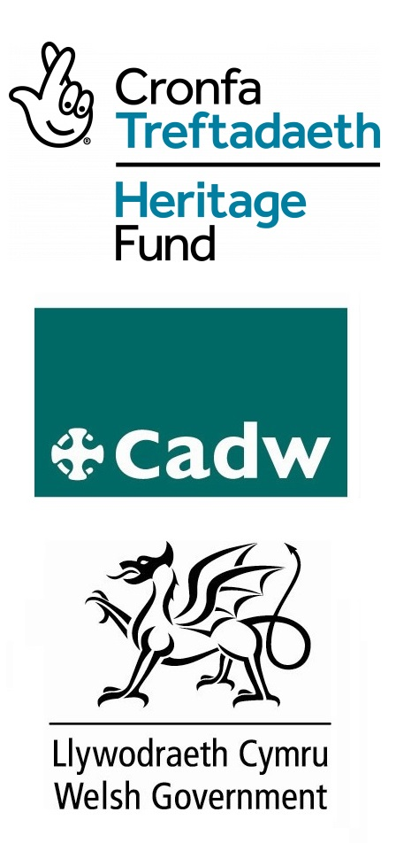 Capel M.C. Llithfaen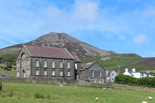 Cae'r Mynydd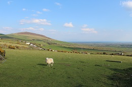 Yr Eifl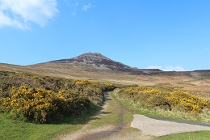 Îles Tudwal Carnguwch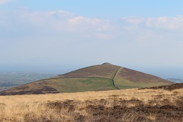
Glasfryn-See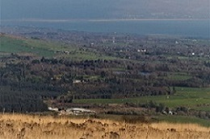
Tre'r Ceiri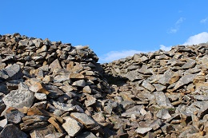
Tre'r Ceiri Gipfel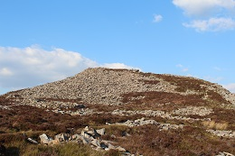
Cilmin Droed Ddu
Carnguwch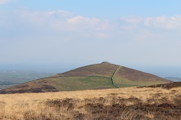
Glasfryn-See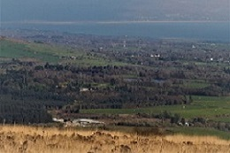
Tre'r Ceiri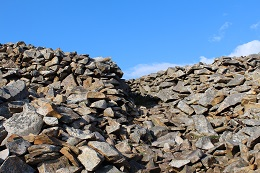
Tre'r Ceiri Gipfel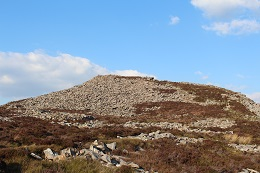
Cilmin Droed Ddu Porthdinllaen und die Turnpike-Strasse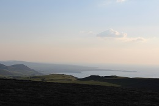
Eifl Steinbruch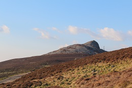
Nant Gwrtheyrn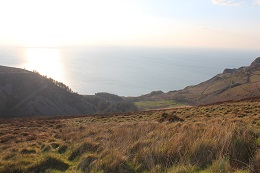
Cwt Aidan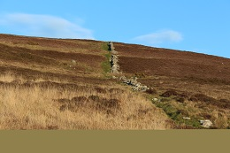
Tylwyth Teg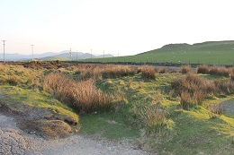
Entreprises Sociales Villageoises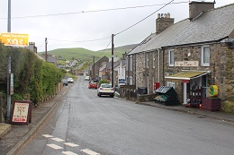
Porthdinllaen und die Turnpike-Strasse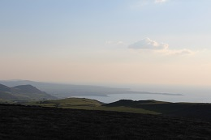
Eifl Steinbruch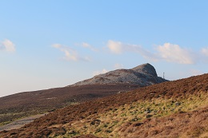
Nant Gwrtheyrn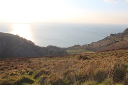
Cwt Aidan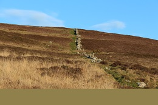
Tylwyth Teg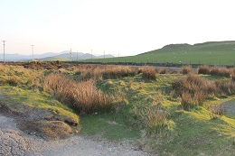
Entreprises Sociales Villageoises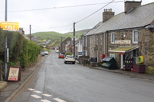